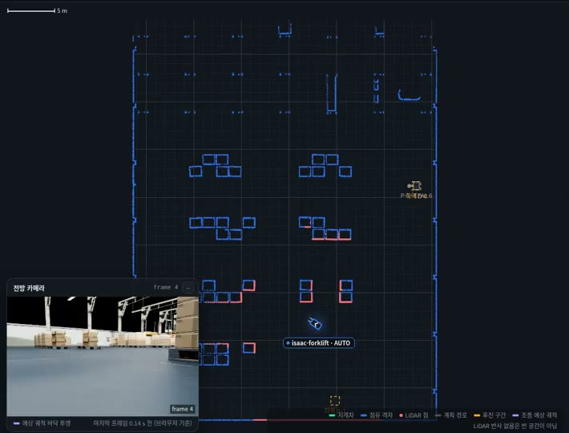
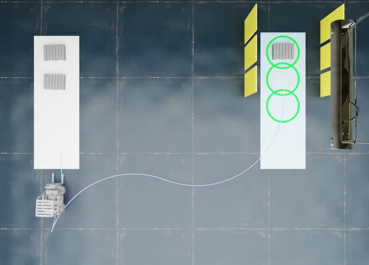
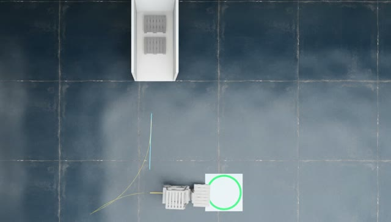
| 결과 | |
|---|---|
| 시험한 시작 위치 | 홀 안 84곳 |
| 사람 개입 없이 위치 확정 | 68곳 (81 %) |
| 틀린 위치로 출발 | 0곳 |
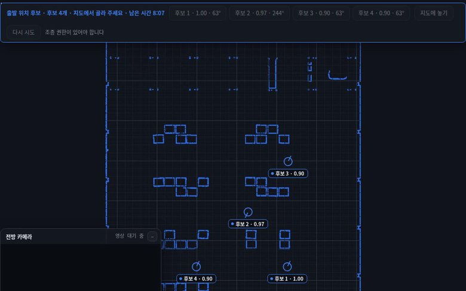
| 8주차 | 지금 | |
|---|---|---|
| 일자 배치 | 1개씩, 5회 중 2회 완주 | 3개 연속, 4회 중 4회 |
| 랜덤 배치 | 1개씩, 4회 중 1회 완주 | 3개 연속, 4회 중 3회 |
| 실행 방식 | 팔레트마다 따로 실행 | 한 번 실행으로 3개 연속 |
| 내용 | |
|---|---|
| 장면 | 좌우가 벽으로 막힌 트레일러 안 팔레트 한 줄 |
| 8주차 | 팔레트를 꺼낸 뒤 운반 중 정지 |
| 지금 | 5회 중 5회 하역까지 완주 |
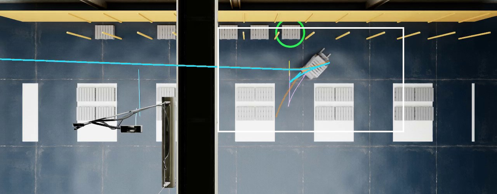
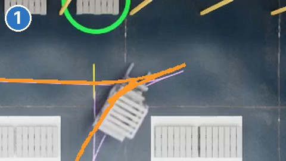
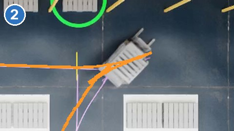
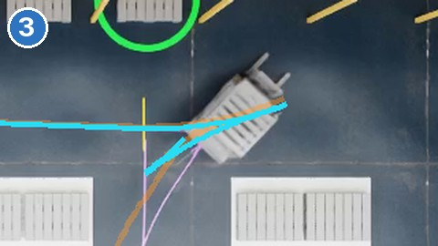
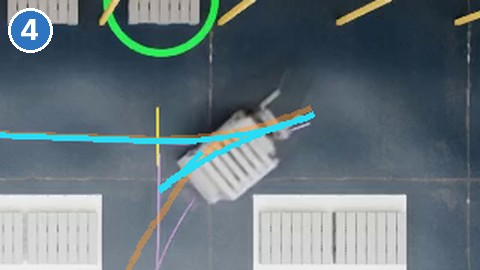
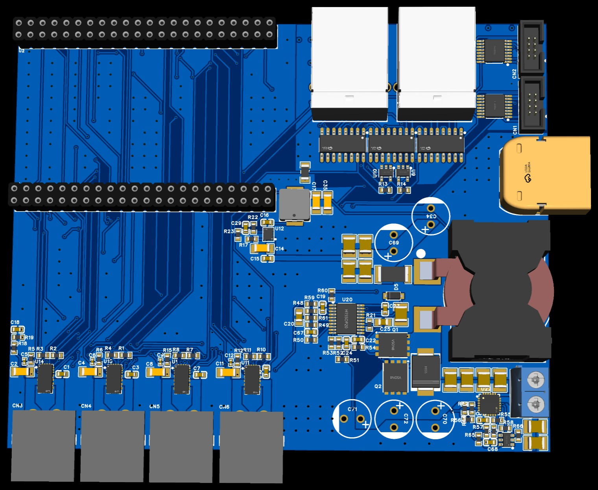
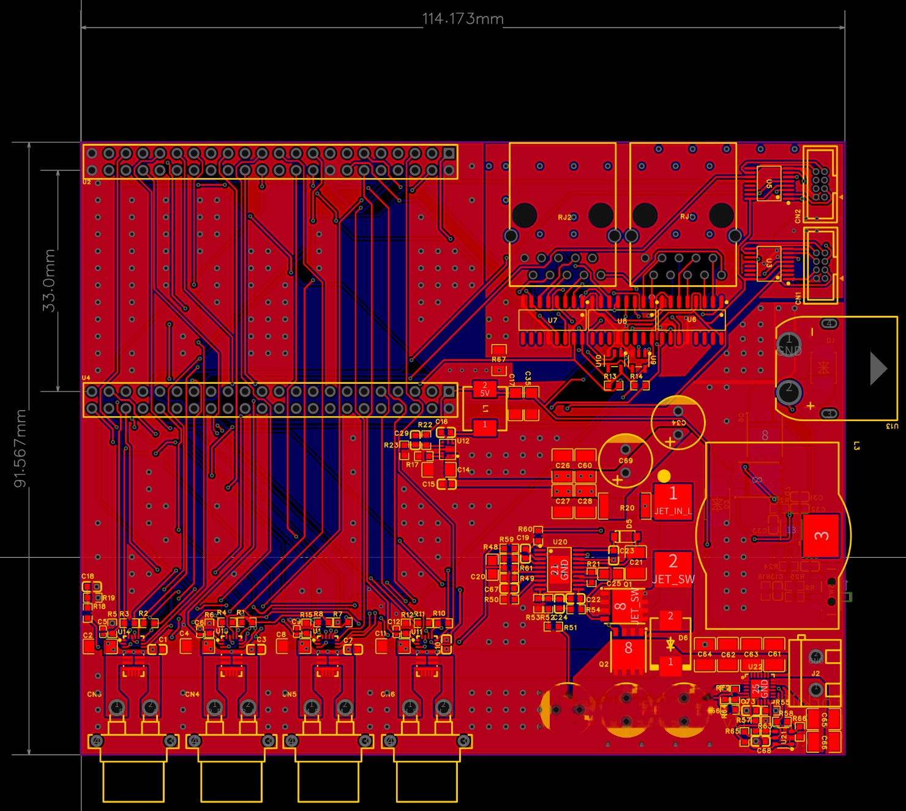
| 보드 | 하는 일 | 크기 (mm) |
|---|---|---|
| 메인보드 | STM32H743 코어 보드 장착, 모터 드라이버 4개, 12 V · 5 V · Jetson 19 V 전원 | 114.2 × 91.6 |
| 바퀴 엔코더 (MT6701) | 뒤 바퀴 좌우의 회전 측정 | 22.8 × 10.4 |
| 절대 엔코더 (KTH7801) | 조향 · 승강 각도 측정 | 22.8 × 10.4 |
| STDS 변환 보드 | 절대 엔코더의 SPI 신호를 차동(LVDS)으로 바꿔 메인보드까지 전송 | 32.6 × 18.4 |
PCB와 부품은 11월 20일 발송 예정입니다
| 구분 | 할 일 |
|---|---|
| 펌웨어 | 보드와 무관하게 짜 둔 통신 코어(mcu-link)를 H743 코어 보드에 올려 PC와 명령 · 상태를 주고받는지 확인, 모터 드라이버(DRV8244) · 엔코더 입력 코드 준비 |
| 보드 도착 뒤 | 조립 → 전원 투입 점검 → 모터 · 엔코더 연결 확인 |
| 리보틱스 장면 | 남은 장면(좁은 통로 rack 에서 꺼내 다른 칸에 넣기, 컨베이어 사이 이송)을 Isaac 에서 진행 |
| 연속 이송 | 랜덤 배치의 남은 실패(두 번째 팔레트 앞 삽입 직전 재관측 정지) 원인 정리 |